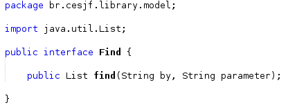
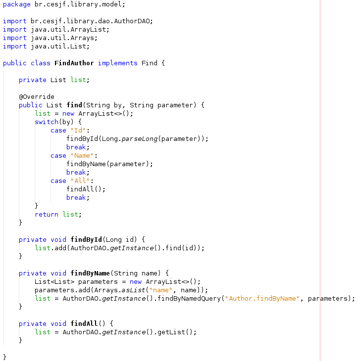
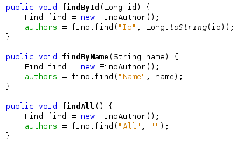

Command
o command é um padrão no qual um objeto é usado para encapsular toda informação necessária para executar uma ação ou acionar um evento em um momento posterior.
Ele foi implementado nas classes abaixo:
- Find (Interface)
- FindAuthor (Implementação do Command para executar as buscas referentes a autores)
- FindBook (Implementação do Command para executar as buscas referentes a livros)
- FindCopy (Implementação do Command para executar as buscas referentes a exemplares)
- FindLoan (Implementação do Command para executar as buscas referentes a empréstimos)
- FindMagazine (Implementação do Command para executar as buscas referentes a revistas)
- FindPublisher (Implementação do Command para executar as buscas referentes a editoras)
- FindReservation (Implementação do Command para executar as buscas referentes a reservas)
- FindSubject (Implementação do Command para executar as buscas referentes a assuntos)
- FindUser (Implementação do Command para executar as buscas referentes a usuários)
Além disso foi utilizado (Consumido) nas classes (Controller) abaixo:
- AuthorController
- BookController
- CopyController
- LoanController
- MagazineController
- PublisherController
- ReservationController
- SubjectController
- UserController
Exemplo de implementação:
Interface:

Implementação do Command para executar as buscas referentes a autores:

Uso do Command no Controller:
